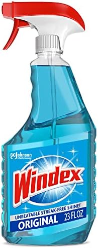
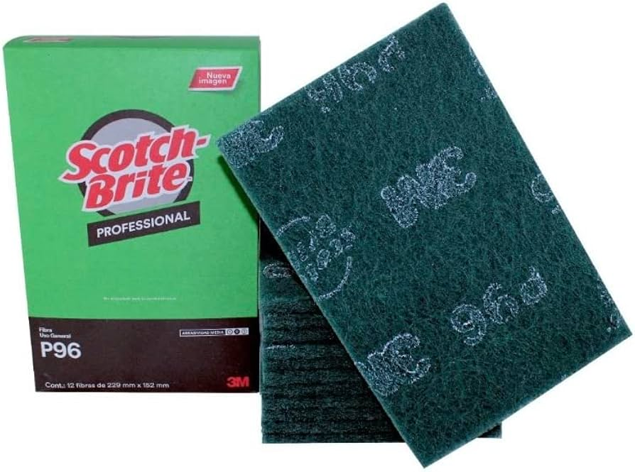
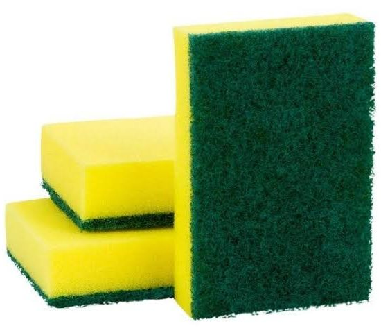

Donolimpio
Todo lo que ocupas para la limpieza de tu hogar



Ofrecemos todo tipo de productos
-
Detergentes de ropa
| Producto |
Descripción |
| Más Color |
Para ropa de color y oscura |
| Ariel |
Para ropa de color |
-
Suavizantes de tela
| Producto |
Descripción |
| Suavitel Ensueño |
Para ropa ultra delicada |
| Suavitel Económico |
Para ropa normal |
-
Desinfectantes
| Producto |
Descripción |
| Gel Antibacterial |
Sin agentex tóxicos que dañen la piel |
| Sanitizante |
Para superficies |
¿Tiendes dudas de cómo usar los productos?
Consulta los siguientes link como referencia: